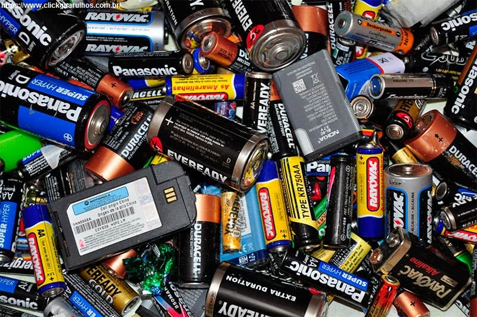

1º Bimestre
Aprendemos sobre o funcionamento de pilhas e baterias, também como suas características e propriedades. Vimos também sobre o descarte correto dos lixos eletrônicos e o meio ambiente.
2º Bimestre
Nos aprofundamos mais em plantas medicinais, tivemos uma breve introdução em foguete e estudamos sobre a construção de moléculas.
3º Bimestre
Vimos a respeito do reino animal e suas características, assim como as classes dos animais e a divisão de vertebrados e invertebrados. Fizemos um portfólio de animais que encontramos no Senac